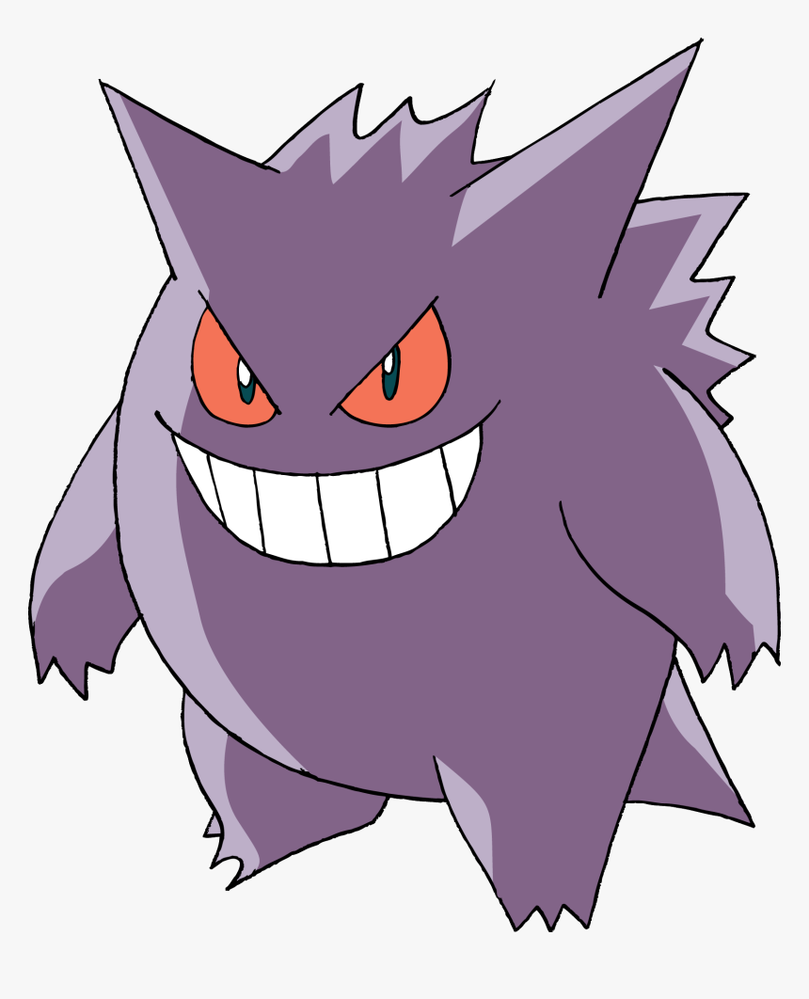

Squirtle
Squirtle  Lucario
Lucario  Bulbasaur
Bulbasaur  Jigglypuff
Jigglypuff  Umbreon
Umbreon  Mewtwo
Mewtwo  Alakazam
Alakazam  Charizard
Charizard  Machamp
Machamp  Garchomp
Garchomp  Dragonite
Dragonite  Sylveon
Sylveon  Snorlax
Snorlax  Eevee
Eevee  Pikachu
Pikachu  Greninja
Greninja Hover over CMJ/SLJ Absorption & Generation cells to see parameter classes. Hover over Weight & Jump Height cells to see that player's historical mean. Click a player's name for their jump history.
| PLAYER | Total Testing Days | Last Testing Day | Weight [kg] | CMJ Jump Height [cm] | SLJ-L Jump Height [cm] | SLJ-R Jump Height [cm] | CMJ Absorption | CMJ Generation | SLJ-L Absorption | SLJ-L Generation | SLJ-R Absorption | SLJ-R Generation |
|---|---|---|---|---|---|---|---|---|---|---|---|---|
| Squirtle | 16 | 2025-12-18 | 86.4 | 31.4 | 54.1 | 39.7 | ↓ | - | ↓ | ↑ | ↑ | ↓ |
| Lucario | 12 | 2025-12-17 | 76.0 | 42.0 | 45.0 | 50.5 | ↓ | ↓ | ↓ | ↑ | ↓ | ↓ |
| Bulbasaur | 16 | 2025-12-04 | 89.3 | 28.2 | 19.9 | 22.6 | ↓ | - | - | ↑ | ↑ | ↑ |
| Jigglypuff | 16 | 2025-12-02 | 105.3 | 28.8 | 12.4 | 37.3 | - | - | - | - | - | - |
| Umbreon | 13 | 2025-11-30 | 65.7 | 28.3 | 12.7 | 44.5 | ↑ | ↓ | - | ↑ | ↓ | ↓ |
| Mewtwo | 16 | 2025-11-28 | 77.1 | 52.6 | 23.5 | 13.4 | ↑ | - | ↓ | - | ↓ | ↑ |
| Alakazam | 11 | 2025-11-18 | 85.0 | 64.3 | 29.0 | 47.3 | ↑ | ↑ | ↑ | ↑ | ↓ | ↑ |
| Charizard | 13 | 2025-11-11 | 70.6 | 51.5 | 24.3 | 45.0 | ↑ | - | ↓ | ↑ | ↑ | - |
|  Gengar | 12 | 2025-11-02 | 87.0 | 53.4 | 19.6 | 12.9 | - | ↓ | ↓ | ↓ | ↓ | ↓ |
| Machamp | 10 | 2025-10-16 | 94.3 | 37.6 | 34.5 | 43.9 | ↓ | ↑ | ↓ | - | ↑ | ↓ |
| Garchomp | 16 | 2025-10-15 | 112.8 | 46.4 | 32.1 | 29.7 | ↑ | ↓ | ↓ | ↑ | ↓ | ↑ |
| Dragonite | 13 | 2025-10-14 | 98.4 | 22.7 | 13.1 | 33.7 | ↑ | ↑ | ↑ | ↓ | ↓ | ↑ |
| Sylveon | 13 | 2025-09-17 | 67.4 | 21.1 | 45.8 | 21.1 | ↓ | - | ↓ | ↑ | ↑ | ↓ |
| Snorlax | 15 | 2025-09-15 | 72.8 | 37.4 | 48.5 | 33.7 | ↑ | ↑ | ↑ | ↑ | ↑ | - |
| Eevee | 12 | 2025-08-18 | 97.7 | 35.3 | 51.0 | 51.8 | - | ↑ | - | - | ↑ | ↓ |
| Pikachu | 14 | 2025-07-17 | 92.2 | 43.8 | 37.4 | 16.0 | ↓ | ↑ | ↑ | ↑ | ↓ | ↓ |
| Greninja | 12 | 2025-06-03 | 80.2 | 47.6 | 53.5 | 49.6 | ↓ | - | ↓ | - | ↑ | ↓ |